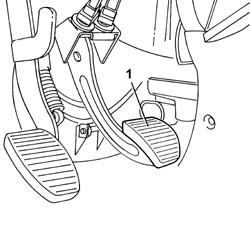

3330B30 RUBBER PEDAL COVER (ONE) - REPLACE
- Path
- Procedures > 33 BRAKES > 3330 HYDRAULIC BRAKE SYSTEM > 3330B PEDAL UNIT > 3330B30 RUBBER PEDAL COVER (ONE) - REPLACE
- Kind
- repair procedure (removal / refitting; the operation number is the code)
- Applies to
- all engines; all production periods
- Interactive page
- https://sloeber94.github.io/elrnDB-fUlss/en/#/179007303
Applies to: all engines; all production periods
 Removing
Removing
 Refitting
Refitting1. Release the edges of the rubber pedal cover from the pedal and remove it.

Applies to: all engines; all production periods
Refitting
Removing- Fit the rubber pedal cover.